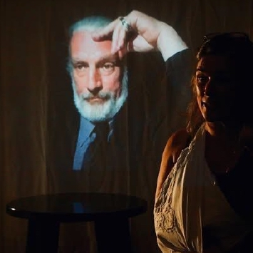

21 et 22 août
PIRATAGES
Un texte de Cathie Belley et Bilbo Cyr
Piratages
La pièce
Piratages explore la démesure du sentiment éco anxieux en passant par la voix et les actions d’un protagoniste activiste. Le personnage principal lutte pour que le pouvoir citoyen sur l’action climatique ne soit pas rompu. Théâtre à processus documentaire, le contexte de la pièce rappelle des luttes menées au Québec pour la protection de l’environnement en donnant la parole à des citoyens impliqués dont certains extraits sont utilisés sur scène.
Piratages est une fiction inspirée de faits réels dans laquelle le public est amené à prendre la parole.
Diffusant des entrevues avec des citoyens de la Baie-des-Chaleurs, du Saguenay et de Québec, le spectacle original a été écrit par la comédienne Cathie Belley et le poète Bilbo Cyr. Des images de la faune aquatique des artistes gaspésiens Maryse Goudreau et Olivier D. Asselin sont aussi diffusées dans ce théâtre à processus documentaire.


Intervention en environnement
Le projet
Théâtre à processus documentaire, les rapports entre les reportages, la vidéo et la place du spectacle vivant ont été explorés à Montréal, lors d’une résidence au théâtre du GESU en 2024. Financé par le CALQ, c'est ainsi que s'est complété le texte de l'œuvre. Une autre résidence a été réalisée en août 2026 avec le Crabe des Scène à l'Auberge Mowattt de Maria afin d'intégrer l'actualité locale à la représentation.
Le groupe, composé d’acteurs, de techniciens et de concepteurs, réalise maintenant le projet en faisant intervenir la population locale lors de la représentation. En créant des interventions, le théâtre devient un lieu de diffusion et de discussion autour des enjeux environnementaux. La culture environnementale s’installe et se partage sur le territoire.
Ils rendent nos projets possibles
Merci à nos partenaires
Ce projet est rendu possible grâce à l’appui et à la collaboration de partenaires qui contribuent à faire vivre la création théâtrale dans notre région.